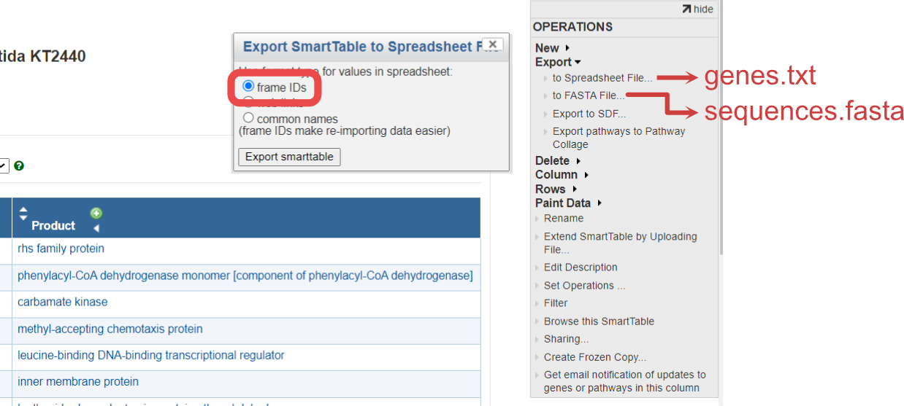
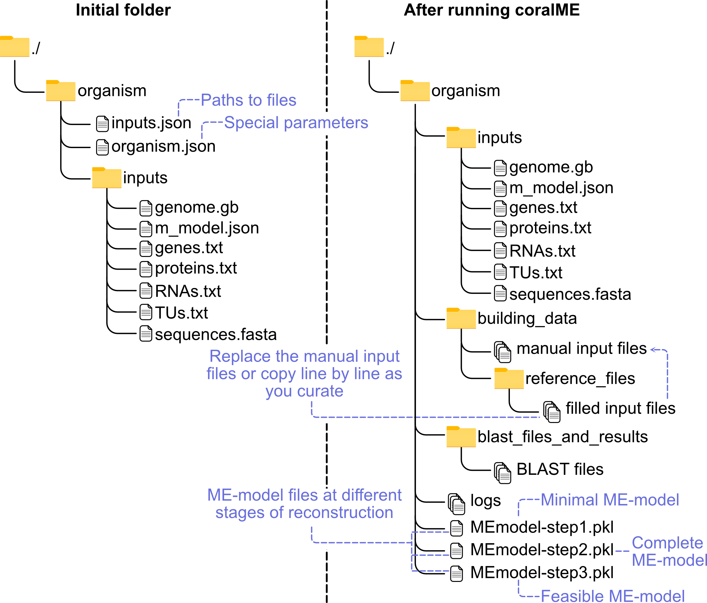

1. Getting started
For details on inputs go to Description of Inputs.
For information about coralME architecture go to Arquitecture of coralME.
1.1. Download files from BioCyc
BioCyc files are optional but useful, you should download them after having your gene id consistent M-model and genbank files.
The quickest way to do this is to copy one of the genes from the genbank file into the BioCyc search bar. Your organism should appear in the list if it is available in BioCyc.
To download:
1.1.1. Go to Tools>Special SmartTables

From here you can download the 5 optional BioCyc files for your organism.

1.1.2. Download genes.txt and sequences.fasta

1.1.3. Download proteins.txt, RNAs.txt and TUs.txt
The same process of genes.txt applies to proteins.txt, RNAs.txt and TUs.txt.
Some columns must be added manually using BioCyc’s dropdown lists ADD PROPERTY COLUMN and ADD TRANSFORM COLUMN within the SmartTable editing webpage.

1.1.3.1. Download proteins.txt
The index (Proteins Complexes) is in the SmartTable by default, but you need to add the columns Common-Name, Genes of polypeptide, complex, or RNA, and Locations.
Common-Name is available in the dropdown list ADD PROPERTY COLUMN
Genes of polypeptide, complex, or RNA is available in the dropdown list ADD TRANSFORM COLUMN
Locations is available in the dropdown list ADD PROPERTY COLUMN.
1.1.3.2. Download RNAs.txt
The index (All-tRNAs Misc-RNAs rRNAs) is in the SmartTable by default, but you need to add the columns Common-Name, and Gene.
Common-Name is available in the dropdown list ADD PROPERTY COLUMN
Gene is available in the dropdown list ADD PROPERTY COLUMN.
1.1.3.3. Download TUs.txt
The index Transcription-Units is in the SmartTable by default, but you need to add the columns Genes of transcription unit, and Direction.
Genes of transcription unit is available in the dropdown list ADD TRANSFORM COLUMN
Direction is available in the dropdown list ADD PROPERTY COLUMN.
1.2. Initialize the folder for your organism
Copy your files to create your initial folder

1.2.1. Define inputs in input.json.
See an example of input.json
1.2.2. Define parameters in organism.json.
See an example of organism.json
Note: You do not need to modify these parameters right away. But once you are at the curation stage you will have to ensure these parameters are applicable to your organism.
1.3. Reconstruct with coralME
Here we show an example to reconstruct a dME-model of B. subtilis
1.3.1. Import packages
[ ]:
from coralme.builder.main import MEBuilder
1.3.2. Define organism and inputs
[ ]:
org = "./helper_files/tutorial/"
Load configuration files
[ ]:
import os
os.chdir(org)
[ ]:
organism = './organism.json'.format(org)
inputs = './input.json'.format(org)
1.3.3. Create builder
- class coralme.builder.main.MEBuilder(*args, **kwargs)[source]
MEBuilder class to coordinate the reconstruction of ME-models.
- Parameters:
*args – Positional arguments are passed as paths to JSON files that update the configuration of the parent class.
**kwargs – Further keyword arguments are passed on as dictionaries to update the configuration of the parent class.
- generate_files(overwrite=True)[source]
Performs the Synchronize and Complement steps of the reconstruction.
This function will read the Organism and the Reference. It will synchronize the input files, complement them, and finally build the OSM for the Organism.
- Parameters:
overwrite (bool) – If True, overwrite the OSM using the defined path in the configuration.
- get_homology(evalue=1e-10)[source]
Calculates homology between Organism and Reference.
- Parameters:
evalue (float, default 1e-10) – Sets the E-value cutoff for calling protein homologs using BLAST.
- prepare_model()[source]
Performs initial preparation of the M-model.
This function will fix some known issues that M-models can
- Parameters:
overwrite (bool) – If True, overwrite the OSM using the defined path in the configuration.
- troubleshoot(growth_key_and_value=None, skip={}, platform=None, solver='gurobi')[source]
- growth_key_and_value:
dictionary of Sympy.Symbol and value to replace
- skip:
set of ME-components to not evaluate during gapfilling
- platform:
‘win32’ to use gurobi (default) or cplex as solver
- solver:
‘gurobi’ (default, if platform is ‘win32’) or ‘cplex’
[ ]:
builder = MEBuilder(*[organism, inputs])
1.3.4. Generate files
[ ]:
builder.generate_files(overwrite=True)
1.3.5. Build ME-model
[ ]:
builder.build_me_model(overwrite=False)
1.3.6. Troubleshoot ME-model
[ ]:
builder.troubleshoot(growth_key_and_value = { builder.me_model.mu : 0.001 })
Note: We set 0.001 as a standard value for feasibility checking, but feel free to modify it! Sometimes too high a value could put a significant strain on the model and give too many gaps to start with. Too low a value might not show you all the gaps needed.
1.4. Curate manually
For details on manual curation go to How to manually curate a ME-model using coralME.